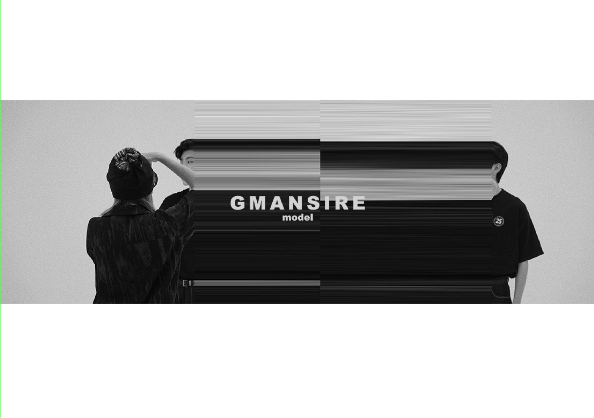
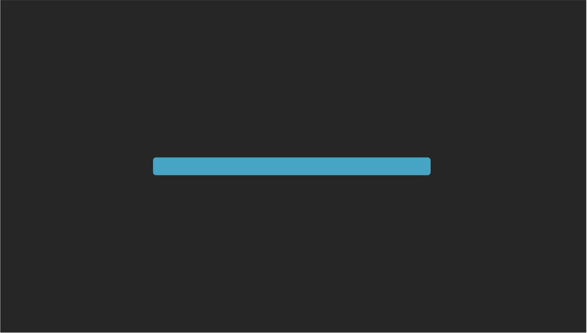
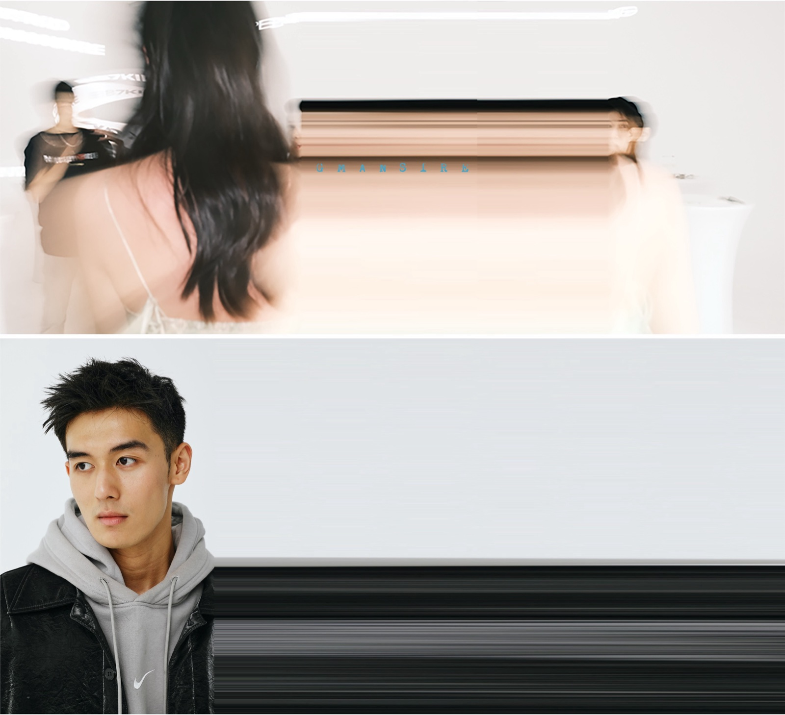
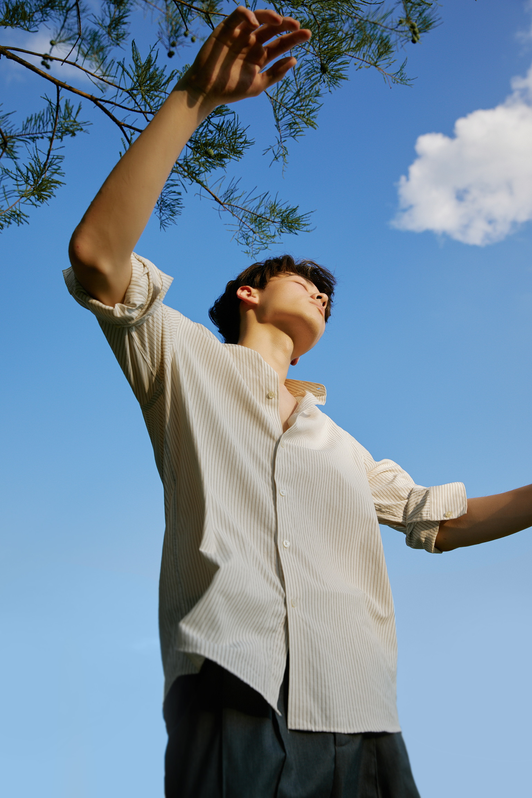
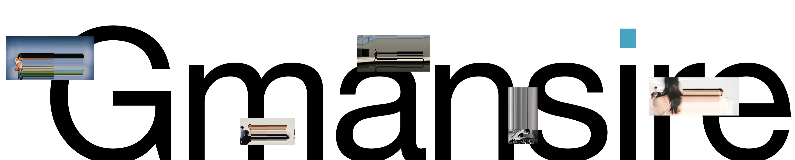

街头文化冲击奢侈品牌
街头文化推动奢侈品牌重新调整原有的精英主义表达。

BRAND PLANNING / 2021
品牌策划 / MODEL AGENCY
围绕一家模特经纪公司的品牌原则、品牌 DNA、商业策略、审美理念与视觉语言所进行的系统策划。
为时尚模特经纪公司构建独特的
品牌战略与视觉语言系统。
独特性、高级感、时尚度、前沿性——这四个维度构成了 GMANSIRE 的品牌感受。GM 首先是一家在行业内无法界定的公司，拥有足够的独特性，给人以高级而不世俗的气质，有自己对时尚的理解与把控，并始终保持先锋的前沿性。
当今时尚世界正经历话语权的转移——从白人精英主义到街头文化的冲击，从大众网红经济到个体自主性的缺失。GMANSIRE 是对精英主义文化的离经叛道，是将时尚民主化的旗手。
现代时尚行业正处于类似传统艺术过渡到当代艺术的过程，即话语权的转移过程，也是时尚民主化的过程。网络社交媒体的 KOL 对时尚话语权的重新把握，与此同时人们对精英文化的不满、对网红经济的厌烦同步显现。
GMANSIRE 要以当代主义作为自己的美学理念——小理性主义取代大理性主义，观念是一切的价值，商业是最好的改造世界的方式。
原始策划从正在发生的行业变化出发：精英文化、街头文化和社交媒体共同改变了时尚的生产与传播方式。
这些信号并不直接给出视觉答案，而是说明 GMANSIRE 为什么需要建立自己的品牌立场。
街头文化推动奢侈品牌重新调整原有的精英主义表达。
网络社交媒体让 KOL 参与时尚叙事，传统中心化权力开始松动。
人们不满精英文化，也厌烦网红经济，同时仍缺少真正的个体自主性。
现代时尚行业正处于类似传统艺术过渡到当代艺术的过程。这既是话语权的转移，也是时尚民主化的过程。
由语境得到的品牌立场
GMANSIRE 是对于精英主义文化的离经叛道，是将时尚民主化的旗手。
原始命题进一步提出“通过 GM 的美学来拯救这个日益堕落的世界”。这一强烈立场继续向下决定品牌原则、审美理念、商业策略与视觉判断。
这一阶段回答 GMANSIRE 是什么，以及任何品牌决策应该依据什么。
三个原则构成最上层判断：如何思考、追求怎样的美，以及品牌能力应当延伸到哪里。
GM 在运营模式与审美中都有特立独行的一面。每个工作时刻都从原点重新思考、另辟蹊径，才有可能引领新的潮流。
作为模特经纪公司，追求美是一种必然选择；在追求美的过程中需要有自己的态度和表达。
在模特专业性之上发展更多元的方向，与模特形成互补，以多维、多方向的思维进行思考。
Decision source
工作评判标准成为一家在行业内无法界定、拥有足够独特性的公司。
无论做什么，都给人高级而不世俗化的感受。
拥有自己对于时尚的理解、判断与把控。
保持先锋感，对社会发展具有预判性与敏感度。
当代性可以消解科学与艺术、理性与非理性之争。GMANSIRE 以当代主义作为自己的美学理念，并以“观念”作为最重要的区分标志。
反思社会现代化中的自我、惯性和行动刻板的风险，寻找审美化生存的策略。
不偏离对现实社会的描述，与主要展望未来的现代性形成区别。
观念是当代主义的重要区分标志，也是信息时代传播的基石。
“观念是创造艺术作品的机器。”Sol LeWitt / 索尔·勒维特
这一变化也标志着工业化繁盛时期手工艺价值的变化，以及信息成为生产手段的时代到来。观念由此成为信息时代传播的基石。
品牌原则和 DNA 向下转化为人才选择、社交传播、策划能力和商业合作方式。
三项能力组成一条发展链：先建立具有 GM 气质的人，再通过社交网络形成认知，最终让公司成为独特感模特的代名词。
选择和培养具有不同寻常的时尚感与 GM 气质的模特。
通过社交网络积累模特本身的人气，使个体成为品牌传播节点。
最终让 GM 成为独特感模特公司的代名词。
商业不是品牌观念的对立面。原始策划把商业视为改造世界的方式，让模特、服装与生活方式共同表达观念。
借用网红传播机制，但不复制网红经济中的同质化审美。
进入大牌合作体系，同时用新的模特与生活方式重新解释它。
让合作通过具体生活方式而非抽象身份标签被看见。
通过模特、服装与生活方式展现观念；最终呈现的都是品牌观念。
人人参与，人人改变。生活方式最终指向的是每个人的政治态度。
这一区分进一步规定 GM 的人才审美：品牌需要的不是常规意义上的“更好看”，而是能够体现前沿时尚感的人。
五官与气质需要体现时尚感，因此不会是常规式审美，更强调前沿性和对于时尚的表达能力。
更多体现多数人对于五官的集中判断，属于大众化且比大众化更好看的大众审美。
独特性、高级感、时尚度与前沿性不是用于装饰页面的词语，而是决定视觉选择是否成立的四个标准。
先明确每个维度在视觉中意味着什么，再选择颜色、构图、留白和图像处理方式。
来自个人审美与生活态度、小众兴趣、对世界的敏锐感知，以及经营方式的不同。
不是材料堆砌，而是通过气质反馈给人的直观感受。
时尚是一种精神标签，需要具有受众基础，并符合当下的时代特征与精神。
意味着原创，并对社会发展保持一定的预判性与敏感度。
社会思潮发生变动。
时尚的本质与人性相关。
时尚反映当下精神。
设计变化应回应人的变化。
颜色承担品牌识别，但必须保持准确、克制和可持续使用。视觉表现因此采用一个非常不同的蓝色，并规定其使用比例。
Color requirements
颜色是品牌的象征；即使只有颜色出现，也应该让人感觉到品牌气息。
不同物料上的输出要让眼睛感受到相同的色相、灰度和饱和度。
品牌色需要含蓄、克制地使用，以保持严谨性、象征性和对比感。
在平面与空间中遵循二八原则，以点、线出现，而不是大面积铺开。

拉伸不是单次图像效果，而是由“简洁、独特、好用”的品牌要求推导出的可重复方法。
品牌需要在常规模特图像中制造一种不被轻易界定的观看感受。
对图像进行横向拉伸与位移，让人物形象、空间和信息同时产生张力。
形成简洁、独特且适合在不同物料中持续复用的视觉语言。


最后一步不再增加新的视觉概念，而是检查品牌原则、战略和视觉规则能否在各个接触点保持一致。
每个接触点承担不同任务，但都需要回到同一套品牌 DNA 和视觉判断。
只作为品牌印记，不让标志替代完整的品牌表达。
使用独特颜色，并严格遵循二八原则。
充分表达品牌信息点，保持设计语言统一。
突出品牌形象，让内容上升到品牌层面。
活动内容需要与 GM 的品牌接触点强关联。
培养具有 GM 气质、能够承载生活方式与观念的模特。
以下图片被放在过程推导之后，用于验证前面的原则是否真正进入了标志、版式、图像与物料系统。
Outcome 01
Logo 作为品牌印记出现，保持识别，但不承担全部品牌信息。

Outcome 02
大尺度字形、克制蓝色与拉伸图像共同建立统一的视觉识别。

Outcome 03
将品牌语言应用到公司介绍、招募信息与版式系统中。
Conclusion / 2021
最终所呈现的，
都是我们的观念。